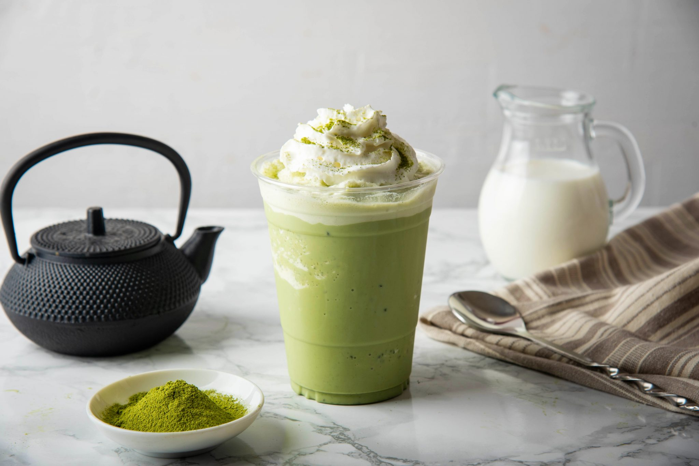

Green Macha Latte
Prep time:
5 mins
Yield:
1
Ingredients
1/2 - 1 teaspoon macha
1/4 cup hot water
1/4 cup warmed coconut milk
Maple syrup, honey, stevia, or sweetener of your choice
Steps
Sift your macha so it is lump-free.
Spoon the macha into a large mug.
Add the hot water and whisk briskly, in an up and down motion, until frothy - 30 seconds or so.
Add the coconut milk and whisk until well combined.
Taste and add additional water, coconut milk, and/or sweetener to your liking.